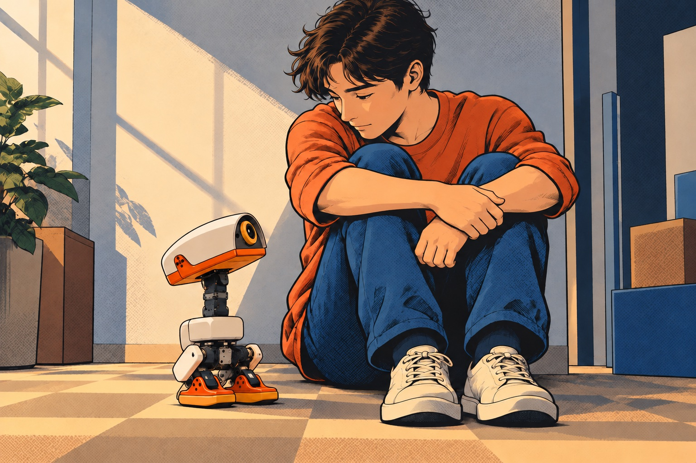

LLM-driven robot pet
State-dependent interaction and LLM-guided skill learning in a simulated robot pet.
Project question
How might a robot pet respond to a situation differently depending on what it perceives and its own internal state? This MuJoCo prototype combines VLM-derived human behavioral cues with simulated internal drives to guide an LLM planner.
All demonstrations and evaluations are in simulation.

What I developed
- Integrated visual cues and simulated internal states into LLM-based behavior selection.
- Built an LLM-driven loop that iteratively refines reward functions using training and evaluation feedback to learn door-threshold crossing.
- Designed and evaluated locomotion rewards, including a hand-designed threshold-crossing skill and cross-seed evaluation of the LLM-generated reward.
The project builds on Pollen Robotics’ Microduck model and an existing training environment. The repository documents the upstream components and project-specific work.
From cues to behavior
- Perceive. Use visual observations to describe human behavior and the surrounding situation.
- Plan. Combine those cues with simulated internal states to select pet-like behaviors.
- Execute. Validate the plan and use motion policies to carry it out in MuJoCo.
The internal states are designed variables of the simulated robot. Visual cues are inputs to the interaction logic.
Learning to cross thresholds
The pet’s walking policy could trip on door thresholds. I developed a separate crossing skill, first through hand-designed rewards and then through an LLM-driven reward-refinement loop following Eureka.
- Propose rewards. Give the LLM the environment description, task, and evaluation criteria to generate candidate reward functions.
- Train and evaluate. Check candidate code, train the policies, and measure crossing success and posture.
- Refine from feedback. Return training logs and evaluation results to the LLM so it can revise the reward for the next round.
The task covers flat ground and 10–20 mm thresholds at two simulated battery voltages, both as a standalone skill and with a hand-off to the walking policy.
Watch the threshold-crossing comparison ↗Evaluation & limitations
In one two-round LLM reward-design run, the selected reward met all threshold-crossing and posture criteria in two of three training seeds without the additional hip-yaw limit. With a 10° hip-yaw limit, one of three LLM-trained seeds passed, compared with all three for the hand-designed reward.
The learned policies kept the head lowered, which the evaluation criteria did not measure. The crossing skill has not yet been connected to the pet’s planner. All results are from simulation, and a single LLM run does not establish how reliably the reward-design process succeeds.
The earlier low-speed walking work remains part of the project; straight-line drift and slow starts at a lower simulated voltage remain limitations. The repository documents evaluation conditions, comparison caveats, and development versus held-out tests.
Read the experiment and evaluation details ↗